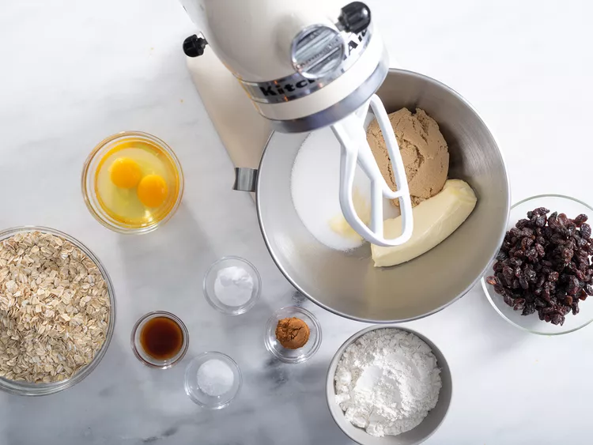
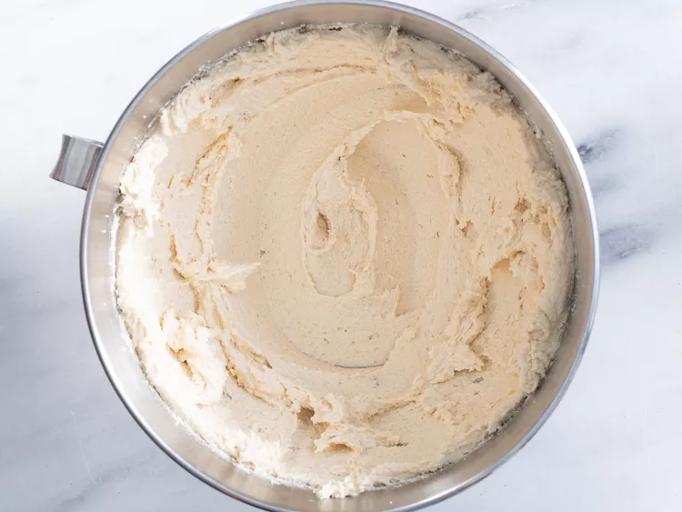
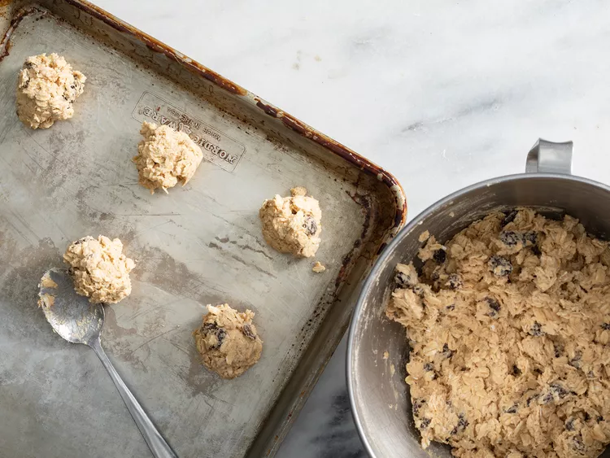

Oatmeal Raisin Cookie
These soft and chewy oatmeal raisin cookies are incredibly easy to make and are very tasty.
Ingredients
- 3/4 cup butter, softened
- 3/4 cup white sugar
- 3/4 cup packed light brown sugar
- 2 large eggs
- 1 teaspoon vanilla extract
- 1 1/4 cups all-purpose flour
- 1 teaspoon baking soda
- 3/4 teaspoon ground cinnamon
- 1/2 teaspoon salt
- 2 3/4 cups rolled oats
- 1 cup raisins
Steps
- Gather all ingredients

- Preheat the oven to 375 degrees F (190 degrees C). Line two cookie sheets with parchment paper or silicone liners.
- Beat butter, white sugar, and brown sugar in a large bowl until smooth and creamy. Beat in eggs and vanilla until fluffy.

- Stir together flour, baking soda, cinnamon, and salt. Gradually beat into the butter mixture. Stir in oats and raisins. Drop teaspoonfuls of batter onto the prepared cookie sheets.

- Bake in the preheated oven until golden brown, 8 to 10 minutes, switching racks halfway through. Remove from the oven and let sit on the cookie sheets for 1 to 2 minutes before transferring cookies to a wire rack to cool completely.